This analysis provides an initial overview of the Titanic dataset, identifying its structure, data types, and significant missing values. Key features like 'Age', 'Cabin', and 'Embarked' require preprocessing. The target variable 'Survived' is binary, indicating a classification task. Initial insights suggest relationships between survival and features like 'Sex', 'Pclass', 'Age', and 'Fare', which will be explored further through visualizations and used for predictive modeling.
The dataset contains 891 entries and 12 columns. Key columns include 'PassengerId', 'Survived' (target), 'Pclass', 'Name', 'Sex', 'Age', 'SibSp', 'Parch', 'Ticket', 'Fare', 'Cabin', and 'Embarked'. Data types are a mix of integers, floats, and objects (strings), which is typical for tabular data. 'Survived' is the target variable, indicating a binary classification problem.
Significant missing values are present in 'Cabin' (687 out of 891, ~77%), 'Age' (177 out of 891, ~20%), and 'Embarked' (2 out of 891, ~0.2%). The high percentage of missing values in 'Cabin' suggests it might be difficult to impute directly and could be better used for feature engineering (e.g., 'HasCabin' or extracting deck information). 'Age' missing values can be imputed using various strategies (mean, median, or more sophisticated methods based on 'Pclass' and 'Sex'). 'Embarked' missing values are few and can be imputed with the mode.
Numerical features include 'PassengerId', 'Age', 'SibSp', 'Parch', 'Fare'. Categorical features include 'Survived' (binary), 'Pclass' (ordinal, but often treated as categorical), 'Sex' (binary nominal), 'Embarked' (nominal). 'Name', 'Ticket', and 'Cabin' are object types that require feature engineering to extract meaningful information. 'Name' can yield 'Title', 'Ticket' might indicate group bookings or class, and 'Cabin' can indicate deck or presence of a cabin. 'PassengerId' is an identifier and should not be used as a feature directly for modeling.
The target variable 'Survived' is an integer type, representing a binary outcome (0 = Died, 1 = Survived). This indicates a binary classification problem. Understanding the distribution of 'Survived' and its relationship with other features is crucial for building an effective predictive model. Initial exploration will focus on how 'Survived' correlates with 'Sex', 'Pclass', 'Age', and 'Fare'.
To quickly identify and quantify missing data across all columns, guiding data imputation strategies.
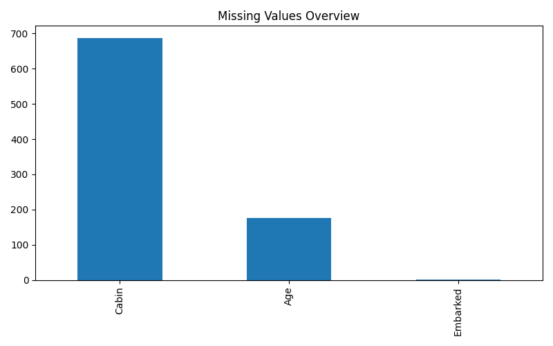
To understand the class balance of the target variable and the overall survival rate.
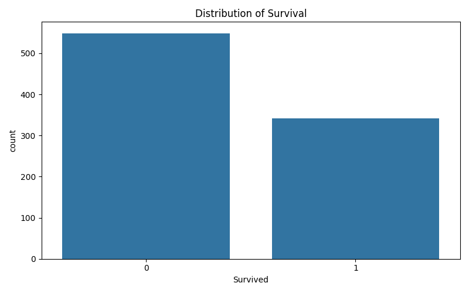
To visualize the age distribution of passengers, identify potential skewness or multiple modes, and inform imputation strategies.
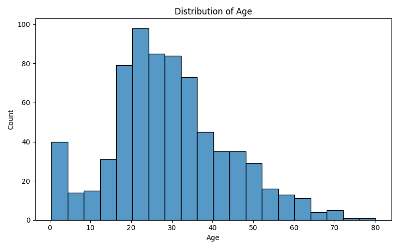
To compare the age distribution between survivors and non-survivors, identifying if age plays a role in survival.
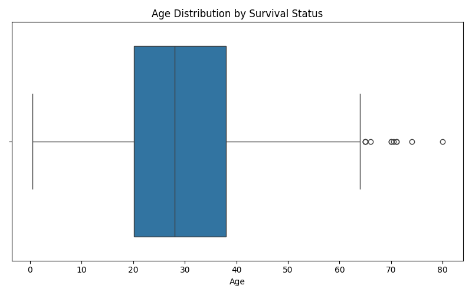
To visualize the distribution of ticket fares, identify skewness and potential outliers, which might require transformation.
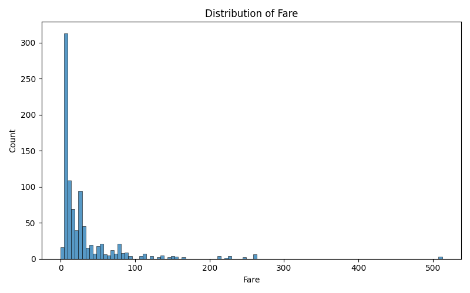
To compare the fare distribution between survivors and non-survivors, identifying if fare class or cost influenced survival.
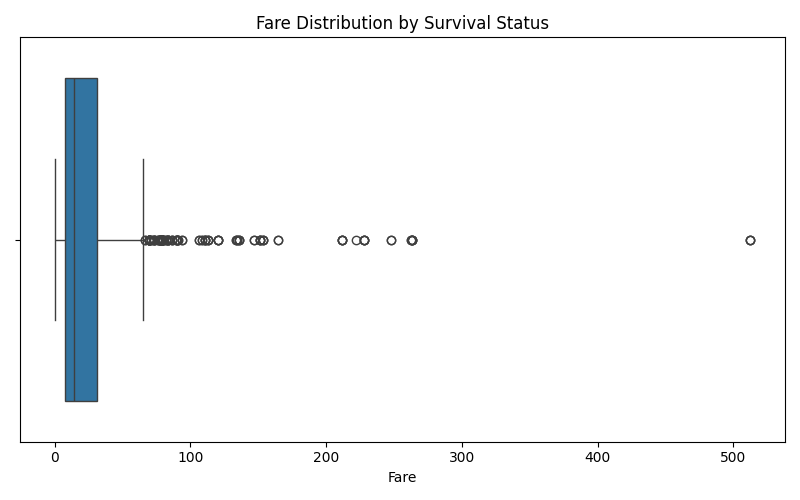
To analyze the survival rates based on gender, a historically significant factor in Titanic survival.
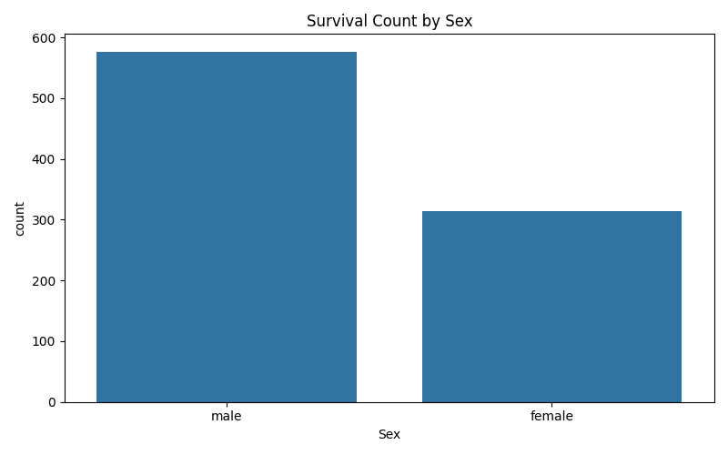
To analyze the survival rates based on passenger class, indicating the impact of socio-economic status.
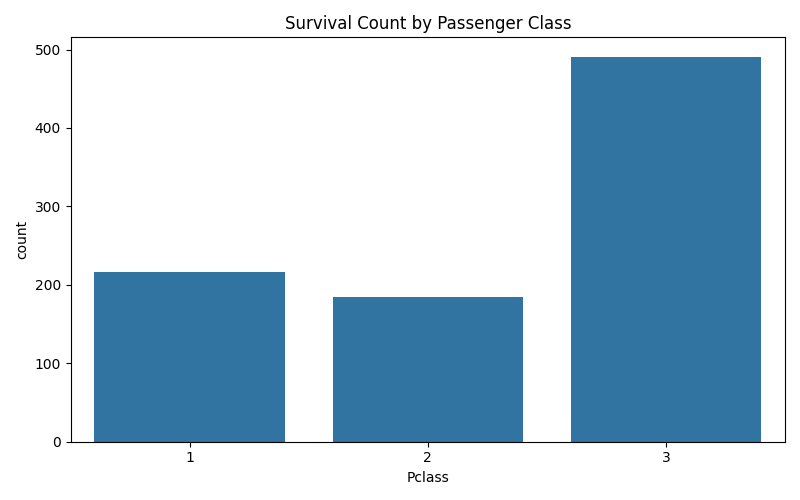
To examine if the port of embarkation had any correlation with survival rates.
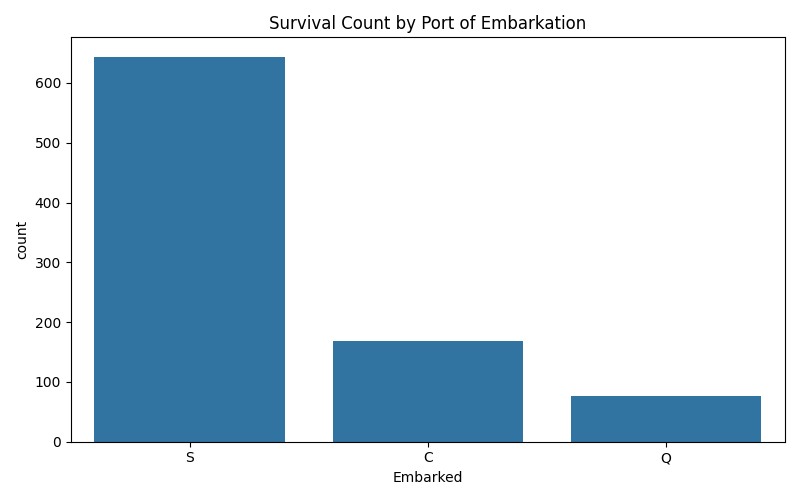
To understand the distribution of family members (siblings/spouses) aboard and identify potential family size patterns.
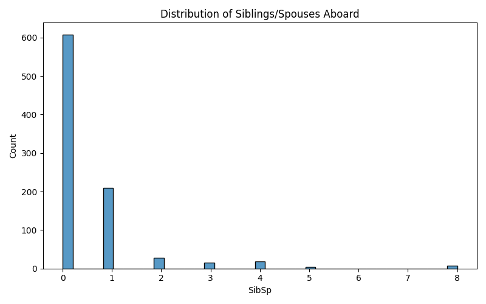
To understand the distribution of family members (parents/children) aboard and identify potential family size patterns.
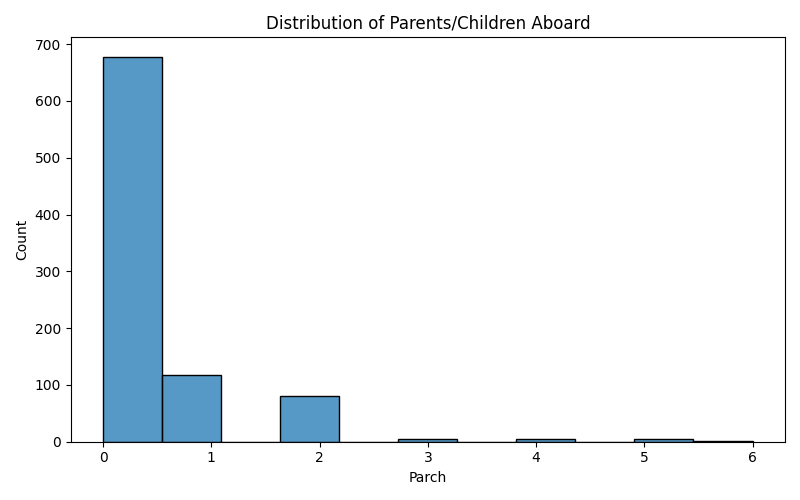